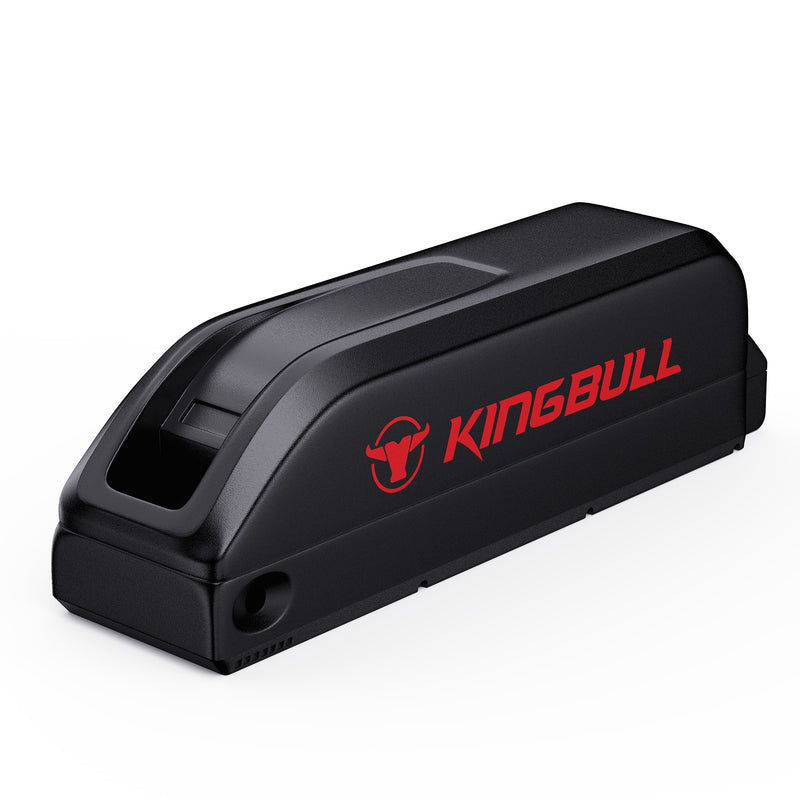
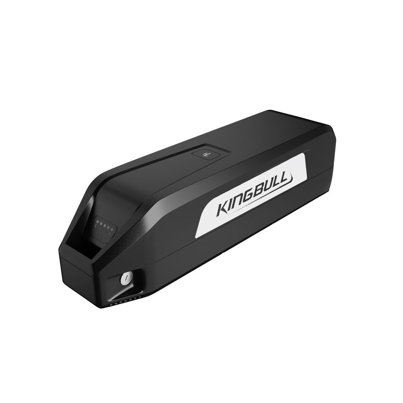
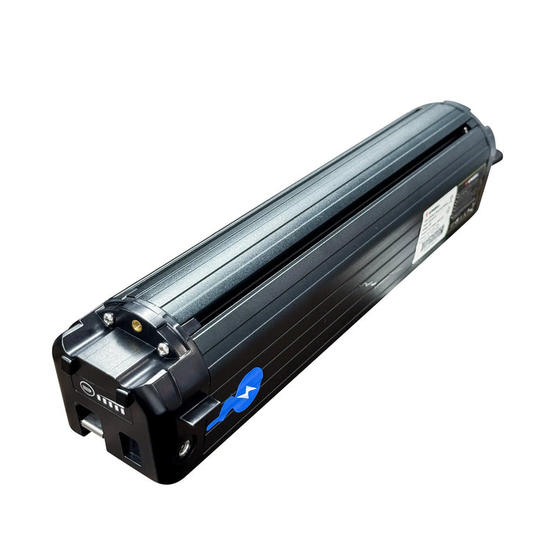
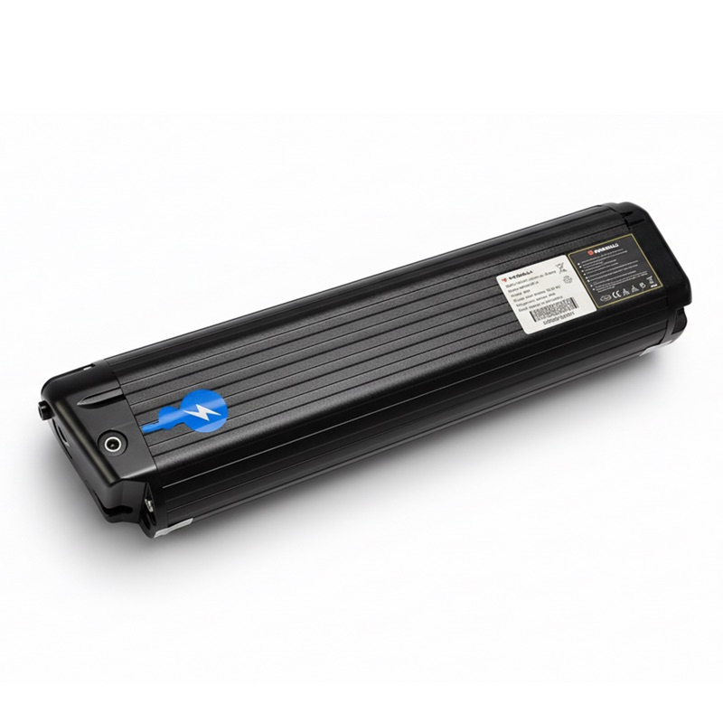
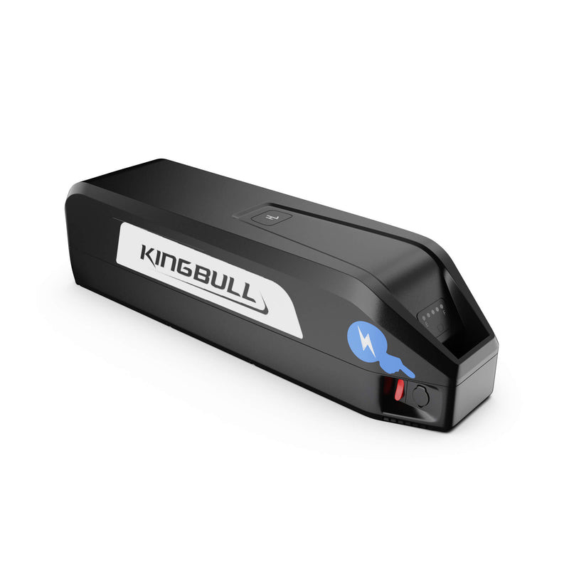
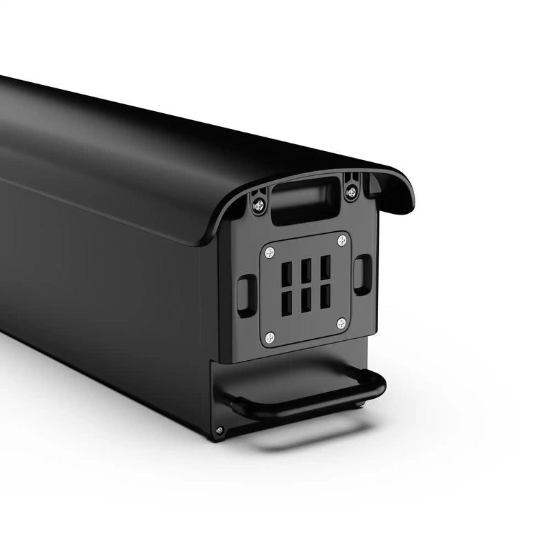

Fits Ranger, Hunter 2.0S
18Ah battery (Ranger, Hunter 2.0S)
Up to 80 miles, 10.1 lb. No charger included.
$429
Check price
Parts that fit
Kingbull's spare batteries and chargers each fit specific models, and the wrong one won't work. Pick your bike to see what fits.
We earn a commission if you buy through our links. It doesn't change the price you pay.
From Kingbull's product descriptions, checked 2026-11-20. Spare batteries don't include a charger. Before ordering a 2.0-series battery, Kingbull asks you to check whether yours has one or two side screw holes.

Up to 80 miles, 10.1 lb. No charger included.

Up to 55 miles, 7 lb. Not for the Hunter 1.0. No charger included.

Up to 55 miles, 8.4 lb. No charger or cover included.

Samsung cells, up to 60 miles, 8.4 lb. Kingbull asks you to check whether your battery has one or two side screw holes (the versions aren't interchangeable) and email them before ordering.

Works alongside the built-in battery to extend range. 7 lb. No charger included.

Up to 80 miles, 11.5 lb. Sold out when we checked - the link shows current stock.